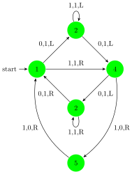

This is the body of the text
Figure is below…

# workspace() using JuMP GLPKMathProgInterface Distributions Plots # function hist3ddatabinsizexbinsizey xmax = maximumdata xmin = minimumdata ymax = maximumdata ymin = minimumdata # X grid point locations xpoints = linspacexmin xmax binsizex+1 ypoints = linspaceymin ymax binsizey+1 # Bins bins = zerosbinsizexbinsizey # Bin allocation for i = 1:sizedata tmp1 = data*onesbinsizex1 - xpoints xbinindx = Intsumtmp1 # print(tmp1) if xbinindx==0 error"Zero in column 1 not possible" end tmp2 = data*onesbinsizey1 - ypoints ybinindx = Intsumtmp2 if ybinindx==0 error"Zero in column 2 not possible" end bins = bins + 1 end return bins xpoints ypoints end # target un-normalised density is a Gaussian mu_t = sig_t = f1xy = 1/sqrt2*pi^2*9*exp-0.5*-mu_t*invsig_t*-mu_t # Proposal density is a Gaussian # Generate samples from a Gaussian Distribution f2xy = randDistributions.MvNormal 1 # Initial state for Markov Chain x_start = samples = Float64 N = 50000 for i = 1:N # First choose a jump state x_jump = mapf2x_startx_start # Evaluate likelihood ratio lr = mapf1x_jumpx_jump/mapf1x_startx_start # if lr >= 1 x_start = x_jump else x_start = randUniform01 1 <= lr ? x_jump : x_start end if i > 3*N/4 samples = end end mean_x1 = sumsamples/sizesamples sigma_x1 = 1/sizesamples-1*sumsamples-mean_x1*onessizesamples.^2 mean_x2 = sumsamples/sizesamples sigma_x2 = 1/sizesamples-1*sumsamples-mean_x2*onessizesamples.^2 sigma_x2 = 1/sizesamples-1*sumsamples-mean_x1*onessizesamples.*samples-mean_x2*onessizesamples Plots.histogramsamples normed=true legend=:none titlefont=font9 color=:red bins=120 # Marginal f3x = 1/sqrt2*pi*3*exp-0.5*x-mu_t*invsig_t*x-mu_t Plots.plot!f3-1010color = "blue"